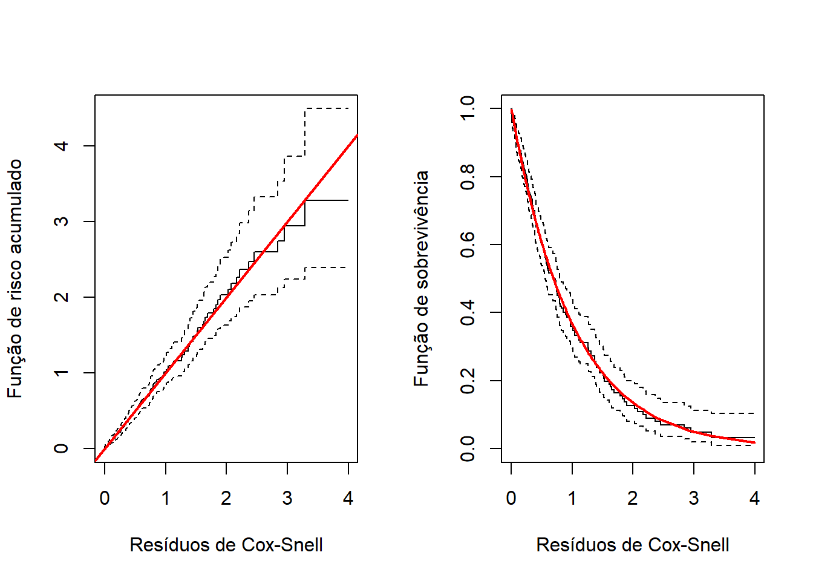
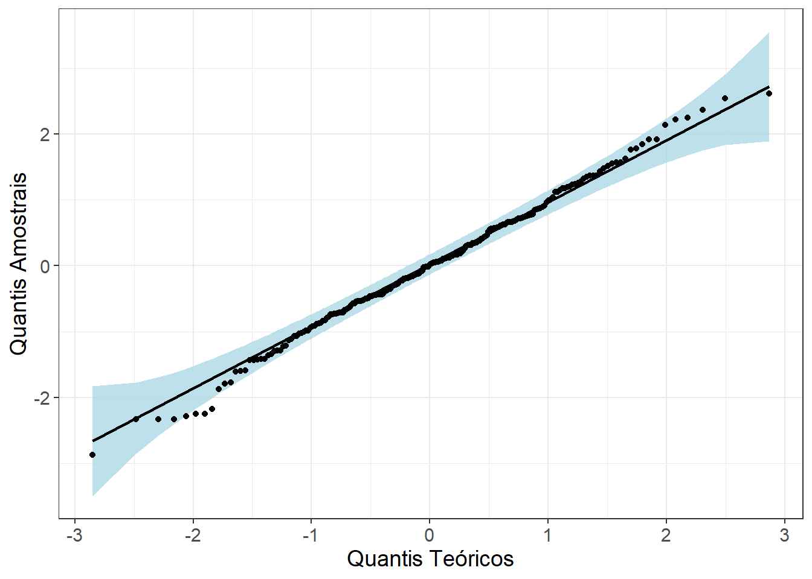
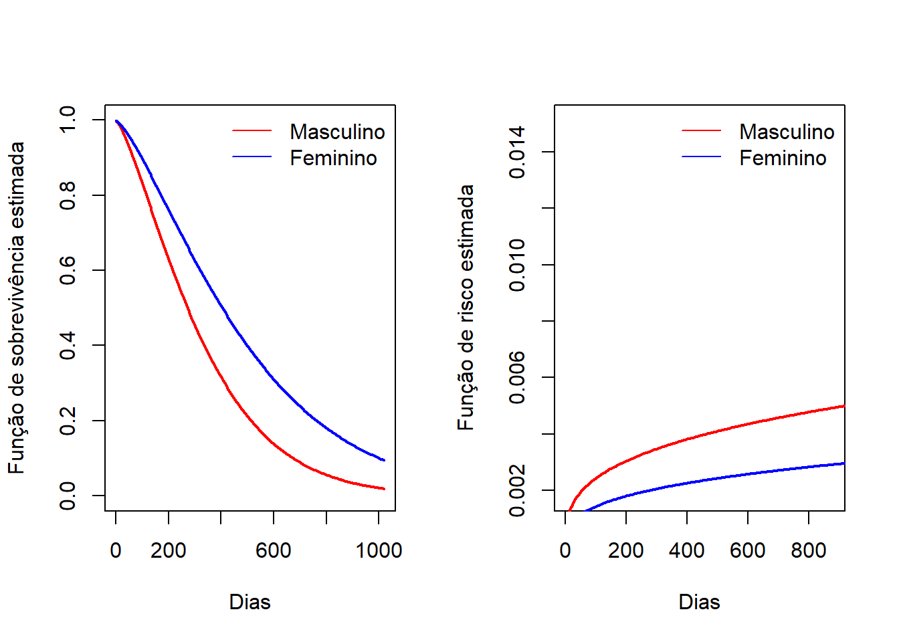

Código
require(flexsurv)
require(reslife)
require(dplyr)
require(ggplot2)
library(qqplotr)
library(coin)Para esta quarta aula prática de Análise de Sobrevivência e Confiabilidade, precisaremos dos seguintes pacotes:
require(flexsurv)
require(reslife)
require(dplyr)
require(ggplot2)
library(qqplotr)
library(coin)Pacote flexsurv: Responsável pelo ajuste de modelos paramétricos flexíveis aos dados de tempo até a ocorrência de um evento de interesse.
Pacote reslife: Responsável por fornecer uma estimativa para o tempo médio residual de ocorrência de um evento de interesse.
Pacote dplyr: Responsável por permitir as manipulações em bases de dados.
Pacote ggplot2: Responsável pela gramática dos gráficos do R.
Pacote qqplotr: Responsável por fazer o gráfico qqplot.
Pacote coin: Responsável por fazer o teste de Peto-Peto.
Esta seção é dedicada à descrição das bases de dados utilizadas nesta aula.

Considere os tempos de sobrevivência, em semanas, de 17 pacientes com leucemia aguda apresentados na Tabela abaixo. Para esses pacientes, suas contagens de glóbulos brancos (WBC) foram registradas na data do diagnóstico e estas, com seus correspondentes logaritmos, na base 10, encontram-se também na Tabela:


Um estudo experimental realizado com camundongos para verificar a eficácia da imunização pela malária foi conduzido no Centro de Pesquisas René Rachou, Fiocruz, MG. Nesse estudo, quarenta e quatro camundongos foram aleatoriamente divididos em três grupos e todos foram infectados pela malária (Plasmodium berguei).
Os camundongos do grupo 1 foram imunizados 30 dias antes da infecção. Além da infecção pela malária, os camundongos dos grupos 1 e 3 foram, também, infectados pela esquistossomose (Schistossoma mansoní). A resposta de interesse nesse estudo foi o tempo decorrido desde a infecção pela malária até a morte do camundongo. Este tempo foi medido em dias e o estudo foi acompanhado por 30 dias. Os tempos de sobrevivência observados para os três grupos encontram-se abaixo. 0 simbolo + indica censura.

Um estudo clínico observacional conduzido pelo North Central Cancer Treatment Group (NCCTG), nos Estados Unidos, acompanhou 228 pacientes diagnosticados com câncer de pulmão em estágio avançado, com o objetivo de investigar fatores associados à sobrevivência desses pacientes.
A resposta de interesse foi o tempo de sobrevivência dos pacientes, medido em dias, considerando a ocorrência do óbito como evento de interesse. Os pacientes que não apresentaram o evento durante o período de acompanhamento foram considerados censurados à direita.
Neste estudo, investigaremos a associação entre o tempo de sobrevivência e duas características dos pacientes: sexo (masculino ou feminino) e idade (em anos). Além dos efeitos individuais dessas covariáveis, será avaliada a possível interação entre sexo e idade, buscando verificar se a associação entre idade e sobrevivência difere entre homens e mulheres.
A base de dados, denominada lung, está disponível no pacote survival do software R.

O estudo é constituído de pacientes portadores de HIV atendidos entre 1986 e 2000 no Instituto de Pesquisa Clínica Evandro Chagas (Ipec/Fiocruz). Dessa coorte, obteve-se uma amostra de 156 indivíduos que foram diagnosticados como portadores de AIDS (critério CDC 1993) durante o período de acompanhamento. O objetivo é mensurar o tempo, em dias, do diagnóstico até a morte dos pacientes. Para comparação da sobrevivência, vamos ver como o tipo de tratamento impacta a sobrevivência: terapia antirretroviral: A = nenhum, B = mono, C = combinada, D = potente. A base está armazenada no objeto AIDS.csv
AJUSTE DOS MODELOS
tidy(ajuste), que retornará:
INTERPRETAÇÃO DOS COEFICIENTES
Est = exp(-ajuste$coefficient)
IC = exp(-confint(ajuste)) Note que o intervalo aparecerá ao contrário!!
Est = exp(ajuste$coefficient)
IC = exp(confint(ajuste)) ANÁLISE DE RESÍDUOS
Para a obtenção dos resíduos de Cox-Snell, utilizaremos a função coxsnell_flexsurvreg(ajuste), em que ajuste é um modelo flexsurv.
Para a obtenção dos resíduos quantílicos aleatorizados, utilizaremos os seguintes comandos:
survival = NULL
quantilic = NULL
cdf = NULL
Residuo = NULL
for(i in 1:nrow(dados1)){
survival[i] <- summary(
ajuste,
type = "survival",
newdata = dados[i, , drop = FALSE],
t = dados$temp[i]
)[[1]]$est
cdf[i] = 1-survival[i]
if(dados$cens[i] == 1){
quantilic[i] <- cdf[i]
} else {
quantilic[i] <- runif(1, min = cdf[i], max = 1)
}
Residuo[i] <- qnorm(quantilic[i])
}Para entendermos bem a saída dos modelos de regressão paramétricos e a interpretação dos coeficientes, esta seção é dedicada ao estudo desses modelos considerando somente uma covariável.
Vamos ilustrar esse cenário com a base de dados de leucemia aguda. Para isso, vamos carregar a base de dados:
temp<-c(65,156,100,134,16,108,121,4,39,143,56,26,22,1,1,5,65)
cens<-c(rep(1,16),0)
log10_wbc<-c(3.36,2.88,3.63,3.41,3.78,4.02,4.00,4.23,3.73,3.85,3.97,
4.51,4.54,5.00,5.00,4.72,5.00)
dados1<-data.frame(temp,cens,log10_wbc)Para esta base de dados, consideraremos a seguinte estrutura regressora: \[\beta_0+\beta_1x_i,\] em que \(x_i\) é o valor de log10_wbc para o \(i\)-ésimo paciente, com \(i=1,...,17\).
Para ajustar cada um dos 5 modelos de regressão paramétricos vistos na disciplina, considere os seguintes comandos:
ajuste_exp<-flexsurvreg(data=dados1, Surv(temp,cens)~log10_wbc,
dist="exponential")
ajuste_wei<-flexsurvreg(data=dados1, Surv(temp,cens)~log10_wbc,
dist="weibull")
ajuste_lognorm<-flexsurvreg(data=dados1, Surv(temp,cens)~log10_wbc,
dist="lognormal")
ajuste_gama<-flexsurvreg(data=dados1, Surv(temp,cens)~log10_wbc,
dist="gamma")
ajuste_gengama<-flexsurvreg(data=dados1, Surv(temp,cens)~log10_wbc,
dist="gengamma")MODELO EXPONENCIAL
Para o modelo exponencial, tem-se a seguinte saída:
tidy(ajuste_exp)# A tibble: 2 × 5
term estimate std.error statistic p.value
<chr> <dbl> <dbl> <dbl> <dbl>
1 rate 0.000384 0.000675 NA NA
2 log10_wbc 0.943 0.430 2.19 0.0284De acordo com o modelo ajustado, temos que:
rate = \(exp\{\hat{\beta_0}\}=0,0004\rightarrow \hat{\beta_0} = ln(0,0004) = -7.82\)Portanto, cada tempo de sobrevivência \(T_i\) possui a seguinte distribuição:
\[T_i\sim Exp(\hat{\alpha_i}=e^{-7.82 + 0.943x_i})\]
Com essa distribuição estimada, podemos obter todas as quantidades de interesse em sobrevivência (funções básicas e medidas-resumo), para cada indivíduo.
Nesse modelo:
Podemos interpretar o coeficiente \(\hat{\beta_1}\) da seguinte forma, a partir da RTM:
Est = exp(-ajuste_exp$coefficient)
IC = exp(-confint(ajuste_exp))
Est rate log10_wbc
2600.8700666 0.3892756 IC 2.5 % 97.5 %
rate 8.135845e+04 83.1447120
log10_wbc 9.050373e-01 0.1674357Assim:
log10_wbc reduz o tempo mediano de sobrevivência em (1-0,39) = 61%. Essa redução foi significativa (p-valor < 0.05)MODELO WEIBULL
Para o modelo Weibull, tem-se a seguinte saída:
tidy(ajuste_wei)# A tibble: 3 × 5
term estimate std.error statistic p.value
<chr> <dbl> <dbl> <dbl> <dbl>
1 shape 0.964 0.203 NA NA
2 scale 2706. 4973. NA NA
3 log10_wbc -0.956 0.453 -2.11 0.0346De acordo com o modelo ajustado, temos que:
scale = \(exp\{\hat{\beta_0}\}=2706\rightarrow \hat{\beta_0} = ln(2706) = 7,90\)Portanto, cada tempo de sobrevivência \(T_i\) possui a seguinte distribuição:
\[T_i\sim Weibull(\hat{\kappa_i}=e^{7,90 - 0,956x_i};\hat{\gamma}=0,964)\]
Com essa distribuição estimada, podemos obter todas as quantidades de interesse em sobrevivência (funções básicas e medidas-resumo), para cada indivíduo.
Note que o intervalo de confiança para \(\gamma\) inclui o valor 1 (veja o objeto
ajuste_wei)
Nesse modelo:
Podemos interpretar o coeficiente \(\hat{\beta_1}\) da seguinte forma:
Est = exp(ajuste_wei$coefficient)
IC = exp(confint(ajuste_wei))
Est shape scale log10_wbc
0.9635079 2706.4591768 0.3843616 IC 2.5 % 97.5 %
shape 0.6381796 1.454680e+00
scale 73.8436050 9.919507e+04
log10_wbc 0.1583048 9.332239e-01Assim:
log10_wbc reduz o tempo mediano de sobrevivência em (1-0,38) = 62%. Essa redução foi significativa (p-valor < 0.05)MODELO LOGNORMAL
Para o modelo lognormal, tem-se a seguinte saída:
tidy(ajuste_lognorm)# A tibble: 3 × 5
term estimate std.error statistic p.value
<chr> <dbl> <dbl> <dbl> <dbl>
1 meanlog 10.8 2.04 NA NA
2 sdlog 1.22 0.221 NA NA
3 log10_wbc -1.82 0.493 -3.69 0.000228De acordo com o modelo ajustado, temos que:
meanlog = \(\hat{\beta_0}\) = 10,8Portanto, cada tempo de sobrevivência \(T_i\) possui a seguinte distribuição:
\[T_i\sim LogNormal(\hat{\mu_i}=10,8 - 1,82x_i;\hat{\sigma}=1,22)\]
Com essa distribuição estimada, podemos obter todas as quantidades de interesse em sobrevivência (funções básicas e medidas-resumo), para cada indivíduo.
Nesse modelo:
Podemos interpretar o coeficiente \(\hat{\beta_1}\) da seguinte forma:
Est = exp(ajuste_lognorm$coefficient)
IC = exp(confint(ajuste_lognorm))
Est meanlog sdlog log10_wbc
5.049362e+04 1.223072e+00 1.625634e-01 IC 2.5 % 97.5 %
meanlog 930.83962362 2.739039e+06
sdlog 0.85882541 1.741803e+00
log10_wbc 0.06186302 4.271834e-01Assim:
log10_wbc reduz o tempo mediano de sobrevivência em (1-0,16) = 84% . Essa redução foi significativa (p-valor < 0.05)MODELO GAMA
Para o modelo Gama, tem-se a seguinte saída:
tidy(ajuste_gama)# A tibble: 3 × 5
term estimate std.error statistic p.value
<chr> <dbl> <dbl> <dbl> <dbl>
1 shape 0.932 0.290 NA NA
2 rate 0.000372 0.000679 NA NA
3 log10_wbc 0.933 0.449 2.08 0.0375De acordo com o modelo ajustado, temos que:
rate = \(exp\{\hat{\beta_0}\}=0,0004\rightarrow \hat{\beta_0} = ln(0,0002) = -7,82\)Portanto, cada tempo de sobrevivência \(T_i\) possui a seguinte distribuição:
\[T_i\sim Gama(\hat{\alpha} = 0,932;\hat{\beta_i}=e^{-7,82+0,933x_i})\]
Com essa distribuição estimada, podemos obter todas as quantidades de interesse em sobrevivência (funções básicas e medidas-resumo), para cada indivíduo
Note que o intervalo de confiança para \(\alpha\) inclui o valor 1 (veja o objeto
ajuste_gama)
Nesse modelo:
Podemos interpretar o coeficiente \(\hat{\beta_1}\) da seguinte forma:
Est = exp(-ajuste_gama$coefficient)
IC = exp(-confint(ajuste_gama))
Est shape rate log10_wbc
1.0727668 2689.0679700 0.3931854 IC 2.5 % 97.5 %
shape 1.971914e+00 0.5836099
rate 9.646890e+04 74.9576935
log10_wbc 9.475344e-01 0.1631548Assim:
log10_wbc reduz o tempo mediano de sobrevivência em (1-0,39) = 61%. Essa redução foi significativa (p-valor < 0.05)MODELO GAMA GENERALIZADA
Para o modelo Gama Generalizada, tem-se a seguinte saída:
tidy(ajuste_gengama)# A tibble: 4 × 5
term estimate std.error statistic p.value
<chr> <dbl> <dbl> <dbl> <dbl>
1 mu 5.34 0.468 NA NA
2 sigma 0.101 0.241 NA NA
3 Q 15.3 35.7 NA NA
4 log10_wbc -0.101 0.136 -0.744 0.457De acordo com o modelo ajustado, temos que:
mu = \(\hat{\beta_0} = 5,34\)Portanto, cada tempo de sobrevivência \(T_i\) possui a seguinte distribuição:
\[T_i\sim GG(\hat{\mu_i}=5,34 - 0,101x_i;\hat{Q}=15,3;\hat{\sigma}=0,101)\]
Com essa distribuição estimada, podemos obter todas as quantidades de interesse em sobrevivência (funções básicas e medidas-resumo), para cada individuo
Nesse modelo:
Podemos interpretar o coeficiente \(\hat{\beta_1}\) da seguinte forma:
Est = exp(ajuste_gengama$coefficient)
IC = exp(confint(ajuste_gengama))
Est mu sigma Q log10_wbc
2.075597e+02 1.013979e-01 4.511939e+06 9.038152e-01 IC 2.5 % 97.5 %
mu 8.290089e+01 5.196689e+02
sigma 9.674024e-04 1.062799e+01
Q 1.752780e-24 1.161446e+37
log10_wbc 6.925002e-01 1.179612e+00Assim:
log10_wbc reduz o tempo mediano de sobrevivência em (1-0,90) = 10%. Essa redução não foi significativa (p-valor > 0.05)Vamos considerar dois critérios de ajuste para comparar os modelos ajustados anteriormente:
AIC E BIC
Para obter o AIC e o BIC de todos os modelos, basta utilizar os seguintes comandos:
AIC<-c(ajuste_exp$AIC,
ajuste_wei$AIC,
ajuste_lognorm$AIC,
ajuste_gama$AIC,
ajuste_gengama$AIC)
BIC<-c(ajuste_exp$BIC,
ajuste_wei$BIC,
ajuste_lognorm$BIC,
ajuste_gama$BIC,
ajuste_gengama$BIC)
Modelos<-c("Modelo Exponencial", "Modelo Weibull",
"Modelo Log-Normal",
"Modelo Gama", "Modelo Gama Generalizado")
Comparacao<-data.frame(Modelos,AIC,BIC)
Comparacao Modelos AIC BIC
1 Modelo Exponencial 165.6826 167.3490
2 Modelo Weibull 167.6509 170.1505
3 Modelo Log-Normal 166.6096 169.1093
4 Modelo Gama 167.6306 170.1302
5 Modelo Gama Generalizado 164.1825 167.5154Por estes critérios, o modelo Gama Generalizado e Exponencial apresentaram os melhores ajustes.
TESTE DA RAZÃO DE VEROSSIMILHANÇA
Para investigar a adequação do modelo mais complexo (gama generalizado) comparado aos demais a partir do teste TRV, considere os seguintes comandos:
TRV_exp = 2*(ajuste_gengama$loglik-ajuste_exp$loglik)
P_valor_exp = pchisq(TRV_exp,2,lower.tail=F)
TRV_wei = 2*(ajuste_gengama$loglik-ajuste_wei$loglik)
P_valor_wei = pchisq(TRV_wei,1,lower.tail=F)
TRV_lognorm = 2*(ajuste_gengama$loglik-ajuste_lognorm$loglik)
P_valor_lognorm = pchisq(TRV_lognorm,1,lower.tail=F)
TRV_gama = 2*(ajuste_gengama$loglik-ajuste_gama$loglik)
P_valor_gama = pchisq(TRV_gama,1,lower.tail=F)
Comparacao<-c("Exponencial x GG", "Weibull x GG",
"LogNormal x GG",
"Gama x GG")
P_valor = c(P_valor_exp,P_valor_wei,
P_valor_lognorm,P_valor_gama)
TRV<-data.frame(Comparacao,P_valor)
TRV Comparacao P_valor
1 Exponencial x GG 0.06392546
2 Weibull x GG 0.01936386
3 LogNormal x GG 0.03537291
4 Gama x GG 0.01959059De acordo com os valores-p do teste TRV, somente o modelo exponencial é compatível com o modelo gama generalizado.
Vamos, portanto, avaliar a análise de resíduos do modelo exponencial.
RESÍDUOS COX-SNEL
Os gráficos diagnósticos com o resíduo de Cox-Snel são feitos com os seguintes comandos:
ResiduoCS = coxsnell_flexsurvreg(ajuste_exp)$est
par(mfrow=c(1,2))
ekm<- survfit (Surv(ResiduoCS,dados1$cens)~1,type="kaplan-meier")
plot(ekm, fun="cumhaz",xlab="Resíduos de Cox-Snell",ylab="Função de risco acumulado")
abline(0, 1, col="red")
plot(ekm, xlab="Resíduos de Cox-Snell",ylab="Função de sobrevivência")
ResiduoCS<-sort(ResiduoCS)
exp1<-exp(-ResiduoCS)
points(ResiduoCS,exp1, col="red",type="l")
Nota-se que os resíduos de CoxSnell acompanham bem o comportamento teórico de uma exponencial padrão tanto do ponto de vista de risco acumulado (gráfico à esquerda) quanto de função de sobrevivência (gráfico à direita)
RESÍDUOS QUANTÍLICOS
Seguem os comandos que calculam os resíduos quantílicos:
survival = NULL
quantilic = NULL
cdf = NULL
Residuo = NULL
for(i in 1:nrow(dados1)){
survival[i] <- summary(
ajuste_exp,
type = "survival",
newdata = dados1[i, , drop = FALSE],
t = dados1$temp[i]
)[[1]]$est
cdf[i] = 1-survival[i]
if(dados1$cens[i] == 1){
quantilic[i] <- cdf[i]
} else {
quantilic[i] <- runif(1, min = cdf[i], max = 1)
}
Residuo[i] <- qnorm(quantilic[i])
}Seguem os comandos que fazem o gráfico qqplot dos resíduos quantílicos
ggplot(data.frame(Residuo), aes(sample=Residuo)) +
stat_qq_band(fill="lightblue") +
stat_qq_line() +
stat_qq_point() +
xlab("Quantis Teóricos")+
ylab("Quantis Amostrais")+
theme_bw() +
theme(text = element_text(size = 14))
Perceba que todos os pontos caem em torno da faixa de confiança, indicando que se comportam segundo uma distribuição normal.
Assim, optamos pelo modelo de regressão exponencial e, de acordo com o objeto ajuste_exp, estaremos assumindo que:
\[T_i\sim Exp(\hat{\alpha_i}=e^{-7.82 + 0.943x_i})\]
Além disso, concluímos que a variável log10_wbc é um fator de risco para a sobrevivência em pacientes com leucemia aguda, Já que o aumento de uma unidade no log10_wbc reduz o tempo mediano de sobrevivência em 61%.
Ao selecionar duas pessoas (uma com log10_wbc=3 e a outra com log10_wbc=4), podemos fazer os gráficos das funções de sobrevivência e risco estimadas:
par(mfrow=c(1,2))
plot(ajuste_exp,newdata = list(log10_wbc=3),type="survival",
col="red",col.obs="white", ci=F, xlab="Semanas",ylab="Função de sobrevivência estimada")
lines(ajuste_exp,newdata = list(log10_wbc=4),type="survival",
col="green",col.obs="white", ci=F)
legend(50,1,col=c("red","green"),legend=c("log10_wbc=3","log10_wbc=4"),lty=1)
plot(ajuste_exp,newdata = list(log10_wbc=3),type="hazard",
col="red",col.obs="white", ci=F, xlab="Semanas",ylab="Função de risco estimada")
lines(ajuste_exp,newdata = list(log10_wbc=4),type="hazard",
col="green",col.obs="white", ci=F)
legend(5,0.06,col=c("red","green"),legend=c("log10_wbc=3","log10_wbc=4"),lty=1)
Podemos estimar medidas resumo também para estas duas pessoas. Os comandos a seguir calculam os tempos médios e medianos de sobrevivência dos pacientes com leucemia:
media1<-summary(ajuste_exp,newdata = list(log10_wbc=3),type="mean")
media2<-summary(ajuste_exp,newdata = list(log10_wbc=4),type="mean")
median1<-summary(ajuste_exp,newdata = list(log10_wbc=3),type="median")
median2<-summary(ajuste_exp,newdata = list(log10_wbc=4),type="median")
media1log10_wbc=3
est lcl ucl
1 153.423 59.50809 431.8555media2log10_wbc=4
est lcl ucl
1 59.72382 37.24691 95.5797median1log10_wbc=3
est lcl ucl
1 106.3447 41.76952 289.0241median2log10_wbc=4
est lcl ucl
1 41.3974 24.6915 67.46392Para uma única variável qualitativa, vamos considerar a base de dados de malária com a variável explicativa grupos. Para isso, vamos carregar a base de dados:
temp<-c(7,8,8,8,8,12,12,17,18,22,30,30,30,30,30,30,8,8,9,10,10,14,
15,15,18,19,21,22,22,23,25,8,8,8,8,8,8,9,10,10,10,11,17,19)
cens<-c(rep(1,10), rep(0,6),rep(1,15),rep(1,13))
grupos<-c(rep("Grupo 1",16), rep("Grupo 2",15), rep("Grupo 3",13))
dados2<-data.frame(temp,cens,grupos)Para esta base de dados, o Grupo 1 será a referência e consideraremos a seguinte estrutura regressora: \[\beta_0+\beta_1x_{i1}+\beta_2x_{i2},\] em que:
Como a variável é qualitativa, é bem interessante começar a análise fazendo um teste de comparação de curvas de sobrevivência, que já aprendemos. Esse passo é feito para verificar se a variável tem potencial para participar do modelo final. Seguem os comandos que aplicam os testes LogRank e Peto-Peto:
#### Logrank
survdiff(Surv(temp,cens)~grupos, data=dados2)Call:
survdiff(formula = Surv(temp, cens) ~ grupos, data = dados2)
N Observed Expected (O-E)^2/E (O-E)^2/V
grupos=Grupo 1 16 10 17.00 2.8816 6.4111
grupos=Grupo 2 15 15 14.51 0.0167 0.0317
grupos=Grupo 3 13 13 6.49 6.5190 10.4447
Chisq= 12.6 on 2 degrees of freedom, p= 0.002 #### Peto-Peto
logrank_test(Surv(temp,cens)~factor(grupos),
type="Peto-Peto",data=dados2)
Asymptotic K-Sample Peto-Peto Test
data: Surv(temp, cens) by
factor(grupos) (Grupo 1, Grupo 2, Grupo 3)
chi-squared = 6.6778, df = 2, p-value = 0.03548Ambos os testes rejeitam a hipótese nula de igualdade das curvas de sobrevivência para todo tempo \(t\).
Para ajustar cada um dos 5 modelos de regressão paramétricos vistos na disciplina, considere os seguintes comandos:
ajuste_exp<-flexsurvreg(data=dados2, Surv(temp,cens)~grupos,
dist="exponential")
ajuste_wei<-flexsurvreg(data=dados2, Surv(temp,cens)~grupos,
dist="weibull")
ajuste_lognorm<-flexsurvreg(data=dados2, Surv(temp,cens)~grupos,
dist="lognormal")
ajuste_gama<-flexsurvreg(data=dados2, Surv(temp,cens)~grupos,
dist="gamma")
ajuste_gengama<-flexsurvreg(data=dados2, Surv(temp,cens)~grupos,
dist="gengamma")MODELO EXPONENCIAL
Para o modelo exponencial, tem-se a seguinte saída:
tidy(ajuste_exp)# A tibble: 3 × 5
term estimate std.error statistic p.value
<chr> <dbl> <dbl> <dbl> <dbl>
1 rate 0.0333 0.0105 NA NA
2 gruposGrupo 2 0.633 0.408 1.55 0.121
3 gruposGrupo 3 1.07 0.421 2.54 0.0111De acordo com o modelo ajustado, temos que:
rate = \(exp\{\hat{\beta_0}\}=0,03\rightarrow \hat{\beta_0} = ln(0,03) = -3.51\)Portanto, cada tempo de sobrevivência \(T_i\) possui a seguinte distribuição:
\[T_i\sim Exp(\hat{\alpha_i}=e^{-3,51 + 0,633x_{i1}+ 1,07x_{i2}})\]
Com essa distribuição estimada, podemos obter todas as quantidades de interesse em sobrevivência (funções básicas e medidas-resumo), para cada indivíduo.
Nesse modelo:
Podemos interpretar os coeficientes regressores \(\hat{\beta_1}\) e \(\hat{\beta_2}\) da seguinte forma:
Est = exp(-ajuste_exp$coefficient)
IC = exp(-confint(ajuste_exp))
Est rate gruposGrupo 2 gruposGrupo 3
30.0000000 0.5311111 0.3435897 IC 2.5 % 97.5 %
rate 55.756412 16.1416413
gruposGrupo 2 1.182189 0.2386073
gruposGrupo 3 0.783564 0.1506627Assim:
MODELO WEIBULL
Para o modelo Weibull, tem-se a seguinte saída:
tidy(ajuste_wei)# A tibble: 4 × 5
term estimate std.error statistic p.value
<chr> <dbl> <dbl> <dbl> <dbl>
1 shape 2.36 0.310 NA NA
2 scale 26.5 3.55 NA NA
3 gruposGrupo 2 -0.430 0.174 -2.48 0.0133
4 gruposGrupo 3 -0.871 0.179 -4.87 0.00000114De acordo com o modelo ajustado, temos que:
scale = \(exp\{\hat{\beta_0}\}=26,5\rightarrow \hat{\beta_0} = ln(26,5) = 3,27\)Portanto, cada tempo de sobrevivência \(T_i\) possui a seguinte distribuição:
\[T_i\sim Weibull(\hat{\kappa_i}=e^{3,27 - 0,430x_{i1}- 0,871x_{i2}},\hat{\gamma}=2,36)\]
Com essa distribuição estimada, podemos obter todas as quantidades de interesse em sobrevivência (funções básicas e medidas-resumo), para qualquer indivíduo
Nesse modelo:
Podemos interpretar os coeficientes regressores \(\hat{\beta_1}\) e \(\hat{\beta_2}\) da seguinte forma:
Est = exp(ajuste_wei$coefficient)
IC = exp(confint(ajuste_wei))
Est shape scale gruposGrupo 2 gruposGrupo 3
2.3609484 26.5290098 0.6506065 0.4183466 IC 2.5 % 97.5 %
shape 1.8250241 3.0542487
scale 20.4037411 34.4931039
gruposGrupo 2 0.4629240 0.9143806
gruposGrupo 3 0.2944916 0.5942916Assim:
MODELO LOGNORMAL
Para o modelo lognormal, tem-se a seguinte saída:
tidy(ajuste_lognorm)# A tibble: 4 × 5
term estimate std.error statistic p.value
<chr> <dbl> <dbl> <dbl> <dbl>
1 meanlog 2.88 0.131 NA NA
2 sdlog 0.502 0.0598 NA NA
3 gruposGrupo 2 -0.180 0.184 -0.976 0.329
4 gruposGrupo 3 -0.586 0.191 -3.07 0.00218De acordo com o modelo ajustado, temos que:
meanlog = \(\hat{\beta_0}=2,88\)Portanto, cada tempo de sobrevivência \(T_i\) possui a seguinte distribuição:
\[T_i\sim LogNormal(\hat{\mu_i}=2,88 - 0,180x_{i1}- 0,586x_{i2},\hat{\sigma}=0,502)\]
Com essa distribuição estimada, podemos obter todas as quantidades de interesse em sobrevivência (funções básicas e medidas-resumo), para qualquer indivíduo
Nesse modelo:
Podemos interpretar os coeficientes regressores \(\hat{\beta_1}\) e \(\hat{\beta_2}\) da seguinte forma:
Est = exp(ajuste_lognorm$coefficient)
IC = exp(confint(ajuste_lognorm))
Est meanlog sdlog gruposGrupo 2 gruposGrupo 3
17.7331657 0.5015295 0.8353077 0.5563136 IC 2.5 % 97.5 %
meanlog 13.7081634 22.9399926
sdlog 0.3969389 0.6336790
gruposGrupo 2 0.5818910 1.1990889
gruposGrupo 3 0.3823587 0.8094098Assim:
MODELO GAMA
Para o modelo Gama, tem-se a seguinte saída:
tidy(ajuste_gama)# A tibble: 4 × 5
term estimate std.error statistic p.value
<chr> <dbl> <dbl> <dbl> <dbl>
1 shape 4.41 0.999 NA NA
2 rate 0.202 0.0579 NA NA
3 gruposGrupo 2 0.313 0.183 1.71 0.0872
4 gruposGrupo 3 0.748 0.189 3.96 0.0000762De acordo com o modelo ajustado, temos que:
rate = \(exp\{\hat{\beta_0}\}=0,202\rightarrow \hat{\beta_0} = ln(0,202) = -1.59\)Portanto, cada tempo de sobrevivência \(T_i\) possui a seguinte distribuição:
\[T_i\sim Gama(\hat{\alpha}=4,41,\hat{\beta_i}=e^{-1,59 + 0,313x_{i1}+ 0,74x_{i2}})\]
Com essa distribuição estimada, podemos obter todas as quantidades de interesse em sobrevivência (funções básicas e medidas-resumo), para cada indivíduo.
Nesse modelo:
Podemos interpretar os coeficientes regressores \(\hat{\beta_1}\) e \(\hat{\beta_2}\) da seguinte forma:
Est = exp(-ajuste_gama$coefficient)
IC = exp(-confint(ajuste_gama))
Est shape rate gruposGrupo 2 gruposGrupo 3
0.2267620 4.9402837 0.7313498 0.4731286 IC 2.5 % 97.5 %
shape 0.3535445 0.1454443
rate 8.6569832 2.8192735
gruposGrupo 2 1.0467383 0.5109898
gruposGrupo 3 0.6855075 0.3265474Assim:
MODELO GAMA GENERALIZADA
Para o modelo Gama Generalizada, tem-se a seguinte saída:
tidy(ajuste_gengama)# A tibble: 5 × 5
term estimate std.error statistic p.value
<chr> <dbl> <dbl> <dbl> <dbl>
1 mu 1.95 0.00873 NA NA
2 sigma 0.0362 0.00183 NA NA
3 Q -18.3 0.0855 NA NA
4 gruposGrupo 2 0.132 0.0124 10.7 1.67e-26
5 gruposGrupo 3 0.130 0.0132 9.83 8.06e-23De acordo com o modelo ajustado, temos que:
mu = \(\hat{\beta_0}=1,95\)Portanto, cada tempo de sobrevivência \(T_i\) possui a seguinte distribuição:
\[T_i\sim GG(\hat{\mu_i}=1,95 + 0,132x_{i1}+ 0,13x_{i2};\hat{\sigma}=0,0361;\hat{Q}=-18,4)\]
Com essa distribuição estimada, podemos obter todas as quantidades de interesse em sobrevivência (funções básicas e medidas-resumo), para qualquer indivíduo
Nesse modelo:
Podemos interpretar os coeficientes regressores \(\hat{\beta_1}\) e \(\hat{\beta_2}\) da seguinte forma:
Est = exp(ajuste_gengama$coefficient)
IC = exp(confint(ajuste_gengama))
Est mu sigma Q gruposGrupo 2 gruposGrupo 3
7.038237e+00 3.618796e-02 1.074244e-08 1.141256e+00 1.138275e+00 IC 2.5 % 97.5 %
mu 6.918770e+00 7.159767e+00
sigma 3.276963e-02 3.996286e-02
Q 9.085133e-09 1.270206e-08
gruposGrupo 2 1.113849e+00 1.169337e+00
gruposGrupo 3 1.109268e+00 1.168040e+00Assim:
Vamos considerar dois critérios de ajuste para comparar os modelos ajustados anteriormente
AIC E BIC
Para obter o AIC e o BIC de todos os modelos, basta utilizar os seguintes comandos:
AIC<-c(ajuste_exp$AIC,
ajuste_wei$AIC,
ajuste_lognorm$AIC,
ajuste_gama$AIC,
ajuste_gengama$AIC)
BIC<-c(ajuste_exp$BIC,
ajuste_wei$BIC,
ajuste_lognorm$BIC,
ajuste_gama$BIC,
ajuste_gengama$BIC)
Modelos<-c("Modelo Exponencial", "Modelo Weibull",
"Modelo Log-Normal",
"Modelo Gama", "Modelo Gama Generalizado")
Comparacao<-data.frame(Modelos,AIC,BIC)
Comparacao Modelos AIC BIC
1 Modelo Exponencial 293.7315 299.0841
2 Modelo Weibull 266.4886 273.6254
3 Modelo Log-Normal 265.0179 272.1546
4 Modelo Gama 265.7907 272.9274
5 Modelo Gama Generalizado 244.6460 253.5669Por estes critérios, o modelo Gama Generalizado e, na sequência, o modelo lognormal apresentaram os melhores ajustes.
TESTE DA RAZÃO DE VEROSSIMILHANÇA
Para investigar a adequação do modelo mais complexo (gama generalizado) comparado aos demais a partir do teste TRV, considere os seguintes comandos:
TRV_exp = 2*(ajuste_gengama$loglik-ajuste_exp$loglik)
P_valor_exp = pchisq(TRV_exp,2,lower.tail=F)
TRV_wei = 2*(ajuste_gengama$loglik-ajuste_wei$loglik)
P_valor_wei = pchisq(TRV_wei,1,lower.tail=F)
TRV_lognorm = 2*(ajuste_gengama$loglik-ajuste_lognorm$loglik)
P_valor_lognorm = pchisq(TRV_lognorm,1,lower.tail=F)
TRV_gama = 2*(ajuste_gengama$loglik-ajuste_gama$loglik)
P_valor_gama = pchisq(TRV_gama,1,lower.tail=F)
Comparacao<-c("Exponencial x GG", "Weibull x GG",
"LogNormal x GG",
"Gama x GG")
P_valor = c(P_valor_exp,P_valor_wei,
P_valor_lognorm,P_valor_gama)
TRV<-data.frame(Comparacao,P_valor)
TRV Comparacao P_valor
1 Exponencial x GG 2.969126e-12
2 Weibull x GG 1.045425e-06
3 LogNormal x GG 2.246381e-06
4 Gama x GG 1.502583e-06De acordo com os valores-p do teste TRV, nenhum modelo mais simples é preferível para o ajuste aos dados.
Apesar de o modelo gama generalizado ter apresentado os menores valores de AIC e BIC, alguns aspectos sugerem cautela em sua utilização neste conjunto de dados com apenas 43 ratos:
O parâmetro de forma estimado foi extremamente negativo, com \(\hat{Q} = -18.4\). Embora valores negativos para \(Q\) sejam permitidos na parametrização adotada pelo pacote flexsurv, magnitudes muito elevadas podem indicar instabilidade numérica ou dificuldades de identificabilidade do modelo.
Os erros-padrão associados aos parâmetros foram excessivamente pequenos para um tamanho amostral reduzido, sugerindo uma superfície de verossimilhança artificialmente muito concentrada.
O modelo gama generalizado possui maior flexibilidade e maior número de parâmetros em relação aos modelos exponencial, Weibull, gama e log-normal, aumentando o risco de sobreajuste em amostras pequenas.
A melhora substancial observada no AIC e no BIC pode refletir não apenas melhor capacidade de ajuste, mas também adaptação excessiva às particularidades da amostra analisada.
Dessa forma, será feita a análise final com o modelo de regressão Lognormal.
RESÍDUOS COX-SNEL
Os gráficos diagnósticos com o resíduo de Cox-Snel são feitos com os seguintes comandos:
ResiduoCS = coxsnell_flexsurvreg(ajuste_lognorm)$est
par(mfrow=c(1,2))
ekm<- survfit (Surv(ResiduoCS,dados2$cens)~1,type="kaplan-meier")
plot(ekm, fun="cumhaz",xlab="Resíduos de Cox-Snell",ylab="Função de risco acumulado")
abline(0, 1, col="red")
plot(ekm, xlab="Resíduos de Cox-Snell",ylab="Função de sobrevivência")
ResiduoCS<-sort(ResiduoCS)
exp1<-exp(-ResiduoCS)
points(ResiduoCS,exp1, col="red",type="l")
Nota-se que os resíduos de CoxSnell acompanham bem o comportamento teórico de uma exponencial padrão tanto do ponto de vista de risco acumulado (gráfico à esquerda) quanto de função de sobrevivência (gráfico à direita)
RESÍDUOS QUANTÍLICOS
Seguem os comandos que calculam os resíduos quantílicos:
survival = NULL
quantilic = NULL
cdf = NULL
Residuo = NULL
for(i in 1:nrow(dados2)){
survival[i] <- summary(
ajuste_lognorm,
type = "survival",
newdata = dados2[i, , drop = FALSE],
t = dados2$temp[i]
)[[1]]$est
cdf[i] = 1-survival[i]
if(dados2$cens[i] == 1){
quantilic[i] <- cdf[i]
} else {
quantilic[i] <- runif(1, min = cdf[i], max = 1)
}
Residuo[i] <- qnorm(quantilic[i])
}
ggplot(data.frame(Residuo), aes(sample=Residuo)) +
stat_qq_band(fill="lightblue") +
stat_qq_line() +
stat_qq_point() +
xlab("Quantis Teóricos")+
ylab("Quantis Amostrais")+
theme_bw() +
theme(text = element_text(size = 14))
Assim, optamos pelo modelo de regressão lognormal e, de acordo com o objeto ajuste_lognorm, estaremos assumindo que:
\[T_i\sim LogNormal(\hat{\mu_i}=2,88 - 0,180x_{i1}- 0,586x_{i2},\hat{\sigma}=0,502)\] Além disso, concluímos que:
Ao selecionar três ratos (um de cada grupo), podemos fazer os gráficos das funções de sobrevivência e risco estimadas:
par(mfrow=c(1,2))
plot(ajuste_lognorm,newdata = list(grupos="Grupo 1"),type="survival",
col="red",col.obs="white", ci=F, xlab="Semanas",ylab="Função de sobrevivência estimada",t=c(0:30))
lines(ajuste_lognorm,newdata = list(grupos="Grupo 2"),type="survival",
col="green",col.obs="white", ci=F, t=c(0:30))
lines(ajuste_lognorm,newdata = list(grupos="Grupo 3"),type="survival",
col="blue",col.obs="white", ci=F, t=c(0:30))
legend(2,0.3,col=c("red","green","blue"),legend=c("Grupo 1","Grupo 2", "Grupo 3"),lty=1)
plot(ajuste_lognorm,type="hazard",newdata = list(grupos="Grupo 1"), col="red",col.obs="white", ci=F, xlab="Semanas",ylab="Função de risco estimada", xlim=c(0,30), t=c(0:30),ylim = c(0,1))
lines(ajuste_lognorm,newdata = list(grupos="Grupo 2"),type="hazard",
col="green",col.obs="white", ci=F, t=c(0:30))
lines(ajuste_lognorm,newdata = list(grupos="Grupo 3"),type="hazard",
col="blue",col.obs="white", ci=F, t=c(0:30))
legend(15,0.04,col=c("red","green","blue"),legend=c("Grupo 1","Grupo 2", "Grupo 3"),lty=1)
Podemos estimar medidas resumo também para estes três ratos. Os comandos a seguir calculam os tempos médios e medianos de sobrevivência dos ratos em cada grupo:
media1<-summary(ajuste_lognorm,newdata = list(grupos="Grupo 1"),type="mean")
media2<-summary(ajuste_lognorm,newdata = list(grupos="Grupo 2"),type="mean")
media3<-summary(ajuste_lognorm,newdata = list(grupos="Grupo 3"),type="mean")
median1<-summary(ajuste_lognorm,newdata = list(grupos="Grupo 1"),type="median")
median2<-summary(ajuste_lognorm,newdata = list(grupos="Grupo 2"),type="median")
median3<-summary(ajuste_lognorm,newdata = list(grupos="Grupo 3"),type="median")Nesta seção, vamos considerar duas covariáveis simultaneamente em modelos de regressão paramétricos de sobrevivência, sendo uma quantitativa (idade) e outra qualitativa (sexo). Além dos efeitos individuais, investigaremos a possível interação entre as covariáveis.
Diferentemente dos exemplos anteriores, vamos começar pela distribuição gama generalizada, selecionar a estrutura regressora e, em seguida, verificar se distribuições mais simples oferecem um ajuste adequado. Ao final, interpretaremos o modelo selecionado e avaliaremos seus resíduos.
Para isso, vamos utilizar a base lung, disponível no pacote survival. Ela contém informações sobre a sobrevivência de 228 pacientes com câncer de pulmão em estágio avançado, incluindo o tempo de acompanhamento, em dias, e o indicador de ocorrência do óbito.
As variáveis utilizadas serão:
time: tempo de acompanhamento, em dias;status: situação ao final do acompanhamento (1 = censurado; 2 = óbito);age: idade, em anos (quantitativa);sex: sexo (1 = masculino; 2 = feminino), que será recodificado como fator.Vamos carregar a base de dados e preparar as variáveis:
dados <- survival::lung
dados$evento <- as.integer(dados$status == 2)
dados$sexo <- factor(
dados$sex,
levels = c(1, 2),
labels = c("Masculino", "Feminino")
)
dados <- dados %>% select(time, evento, sexo, age)Como ponto de partida, vamos considerar a distribuição gama generalizada, que possui os parâmetros \(\mu\), \(\sigma\) e \(Q\). Na parametrização do pacote flexsurv, as covariáveis entram, por padrão, no parâmetro \(\mu\):
\[ T_i\sim GG(\mu_i,\sigma,Q). \]
Para permitir a interpretação da estrutura regressora, definiremos:
Vamos comparar cinco especificações:
| Modelo | Estrutura regressora para \(\mu_i\) |
|---|---|
| M0 — sem covariáveis | \(\beta_0\) |
| M1 — sexo | \(\beta_0+\beta_1s_i\) |
| M2 — idade | \(\beta_0+\beta_2a_i\) |
| M3 — sexo + idade | \(\beta_0+\beta_1s_i+\beta_2a_i\) |
| M4 — sexo + idade + interação | \(\beta_0+\beta_1s_i+\beta_2a_i+\beta_3s_ia_i\) |
Para ajustar os cinco modelos, considere os seguintes comandos:
# Sem covariáveis
M0 <- flexsurvreg(
Surv(time, evento) ~ 1,
data = dados, dist = "gengamma"
)
# Somente a covariável qualitativa (sexo)
M1 <- flexsurvreg(
Surv(time, evento) ~ sexo,
data = dados, dist = "gengamma"
)
# Somente a covariável quantitativa (idade)
M2 <- flexsurvreg(
Surv(time, evento) ~ age,
data = dados, dist = "gengamma"
)
# Efeitos aditivos de sexo e idade
M3 <- flexsurvreg(
Surv(time, evento) ~ sexo + age,
data = dados, dist = "gengamma"
)
# Efeitos principais e interação
M4 <- flexsurvreg(
Surv(time, evento) ~ sexo * age,
data = dados, dist = "gengamma"
)Podemos observar os parâmetros estimados para cada modelo:
tidy(M0)# A tibble: 3 × 5
term estimate std.error statistic p.value
<chr> <dbl> <dbl> <dbl> <dbl>
1 mu 6.08 0.0943 NA NA
2 sigma 0.727 0.0730 NA NA
3 Q 1.13 0.230 NA NAtidy(M1)# A tibble: 4 × 5
term estimate std.error statistic p.value
<chr> <dbl> <dbl> <dbl> <dbl>
1 mu 5.89 0.109 NA NA
2 sigma 0.751 0.0686 NA NA
3 Q 1.02 0.207 NA NA
4 sexoFeminino 0.393 0.132 2.99 0.00282tidy(M2)# A tibble: 4 × 5
term estimate std.error statistic p.value
<chr> <dbl> <dbl> <dbl> <dbl>
1 mu 6.84 0.439 NA NA
2 sigma 0.738 0.0755 NA NA
3 Q 1.08 0.235 NA NA
4 age -0.0124 0.00703 -1.76 0.0777tidy(M3)# A tibble: 5 × 5
term estimate std.error statistic p.value
<chr> <dbl> <dbl> <dbl> <dbl>
1 mu 6.60 0.446 NA NA
2 sigma 0.756 0.0706 NA NA
3 Q 0.990 0.214 NA NA
4 sexoFeminino 0.384 0.132 2.92 0.00351
5 age -0.0115 0.00704 -1.63 0.103 tidy(M4)# A tibble: 6 × 5
term estimate std.error statistic p.value
<chr> <dbl> <dbl> <dbl> <dbl>
1 mu 6.76 0.550 NA NA
2 sigma 0.758 0.0710 NA NA
3 Q 0.979 0.216 NA NA
4 sexoFeminino -0.0647 0.925 -0.0700 0.944
5 age -0.0140 0.00871 -1.60 0.109
6 sexoFeminino:age 0.00716 0.0147 0.488 0.625No modelo M4, a estrutura regressora é dada por:
\[ \mu_i=\beta_0+\beta_1s_i+\beta_2a_i+\beta_3s_ia_i. \]
A expressão sexo * age inclui os efeitos principais (sexo e age) e o termo de interação (sexo:age). Como os homens são a categoria de referência, temos:
Homens (\(s_i=0\)):
\[ \mu_i=\beta_0+\beta_2a_i. \]
Mulheres (\(s_i=1\)):
\[ \mu_i=(\beta_0+\beta_1)+(\beta_2+\beta_3)a_i. \]
Assim, o efeito da idade é representado por \(\beta_2\) entre os homens e por \(\beta_2+\beta_3\) entre as mulheres. As razões de tempos medianos de óbito associadas ao aumento de um ano de idade são:
\[ RTM_{\text{idade, homens}}=e^{\beta_2},\qquad RTM_{\text{idade, mulheres}}=e^{\beta_2+\beta_3}. \]
Além disso, o efeito do sexo passa a depender da idade. Para pacientes com a mesma idade \(a\), a razão entre os tempos medianos de óbito das mulheres e dos homens é:
\[ RTM_{\text{mulheres/homens}}(a)=e^{\beta_1+\beta_3a}. \]
Portanto, \(\beta_3\) indica se a associação entre idade e tempo de sobrevivência difere entre homens e mulheres. A hipótese de ausência de interação é:
\[ H_0:\beta_3=0\qquad\text{versus}\qquad H_1:\beta_3\neq0. \]
Atenção: na presença de interação, o coeficiente isolado de
sexoFemininorepresenta a comparação entre os sexos quando a idade é igual a zero, uma condição sem interesse clínico nesta base.
Vamos considerar dois critérios de informação para comparar as cinco especificações da gama generalizada: AIC e BIC.
AIC <- c(M0$AIC, M1$AIC, M2$AIC, M3$AIC, M4$AIC)
BIC <- c(M0$BIC, M1$BIC, M2$BIC, M3$BIC, M4$BIC)
Modelos <- c(
"Sem covariáveis",
"Sexo",
"Idade",
"Idade + Sexo",
"Idade + Sexo + Interação"
)
Comparacao <- data.frame(Modelos, AIC, BIC)
Comparacao Modelos AIC BIC
1 Sem covariáveis 2313.380 2323.668
2 Sexo 2305.297 2319.015
3 Idade 2311.667 2325.384
4 Idade + Sexo 2304.118 2321.265
5 Idade + Sexo + Interação 2305.871 2326.447Os menores valores de AIC e BIC indicam os modelos preferidos segundo cada critério. Neste exemplo:
Assim, M1 e M3 são os principais candidatos. Para investigar a contribuição adicional da idade, vamos utilizar o Teste da Razão de Verossimilhanças (TRV).
O TRV compara modelos aninhados, isto é, modelos em que o mais simples pode ser obtido impondo restrições aos parâmetros do mais complexo.
Primeiro, vamos calcular algumas comparações possíveis entre os cinco modelos:
TRV_01 <- 2 * (M1$loglik - M0$loglik)
P_valor_01 <- pchisq(TRV_01, 1, lower.tail = FALSE)
TRV_02 <- 2 * (M2$loglik - M0$loglik)
P_valor_02 <- pchisq(TRV_02, 1, lower.tail = FALSE)
TRV_03 <- 2 * (M3$loglik - M0$loglik)
P_valor_03 <- pchisq(TRV_03, 2, lower.tail = FALSE)
TRV_13 <- 2 * (M3$loglik - M1$loglik)
P_valor_13 <- pchisq(TRV_13, 1, lower.tail = FALSE)
TRV_23 <- 2 * (M3$loglik - M2$loglik)
P_valor_23 <- pchisq(TRV_23, 1, lower.tail = FALSE)
TRV_34 <- 2 * (M4$loglik - M3$loglik)
P_valor_34 <- pchisq(TRV_34, 1, lower.tail = FALSE)
Comparacao <- c(
"M0 x M1", "M0 x M2", "M0 x M3",
"M1 x M3", "M2 x M3", "M3 x M4"
)
Estatistica <- c(TRV_01, TRV_02, TRV_03,
TRV_13, TRV_23, TRV_34)
P_valor <- c(P_valor_01, P_valor_02, P_valor_03,
P_valor_13, P_valor_23, P_valor_34)
TRV <- data.frame(Comparacao, Estatistica, P_valor)
TRV Comparacao Estatistica P_valor
1 M0 x M1 10.0821318 0.001497140
2 M0 x M2 3.7127834 0.053997275
3 M0 x M3 13.2611675 0.001319393
4 M1 x M3 3.1790357 0.074588735
5 M2 x M3 9.5483841 0.002001255
6 M3 x M4 0.2472876 0.618991492Vamos destacar três resultados importantes:
Diante dos resultados do AIC, BIC e TRV, optaremos, nesta etapa, pelo modelo gama generalizada com apenas sexo (M1). A decisão privilegia a parcimônia, sem interpretar a ausência de significância como prova de inexistência de efeito da idade.
Uma vez definida a estrutura regressora com apenas a covariável sexo, vamos investigar se distribuições mais simples são suficientes para descrever os tempos de sobrevivência.
Para ajustar cada um dos cinco modelos de regressão paramétricos considerados na disciplina, utilize:
# Exponencial
ajuste_exp <- flexsurvreg(
Surv(time, evento) ~ sexo,
data = dados, dist = "exponential"
)
# Weibull
ajuste_wei <- flexsurvreg(
Surv(time, evento) ~ sexo,
data = dados, dist = "weibull"
)
# Lognormal
ajuste_lognorm <- flexsurvreg(
Surv(time, evento) ~ sexo,
data = dados, dist = "lognormal"
)
# Gama
ajuste_gama <- flexsurvreg(
Surv(time, evento) ~ sexo,
data = dados, dist = "gamma"
)
# Gama Generalizada (já ajustada anteriormente)
ajuste_gengama <- M1Vamos novamente utilizar os dois critérios de informação:
AIC <- c(ajuste_exp$AIC,
ajuste_wei$AIC,
ajuste_lognorm$AIC,
ajuste_gama$AIC,
ajuste_gengama$AIC)
BIC <- c(ajuste_exp$BIC,
ajuste_wei$BIC,
ajuste_lognorm$BIC,
ajuste_gama$BIC,
ajuste_gengama$BIC)
Modelos <- c("Exponencial", "Weibull", "Lognormal",
"Gama", "Gama Generalizada")
Comparacao <- data.frame(Modelos, AIC, BIC)
Comparacao Modelos AIC BIC
1 Exponencial 2319.199 2326.058
2 Weibull 2303.303 2313.591
3 Lognormal 2331.232 2341.520
4 Gama 2304.362 2314.650
5 Gama Generalizada 2305.297 2319.015Neste exemplo, a Weibull apresenta os menores valores de AIC e BIC. O modelo gama também apresenta desempenho competitivo, enquanto exponencial e lognormal têm desempenho inferior.
A gama generalizada inclui as distribuições consideradas como casos particulares, sob restrições nos seus parâmetros. Assim:
TRV_exp <- 2 * (ajuste_gengama$loglik - ajuste_exp$loglik)
P_valor_exp <- pchisq(TRV_exp, 2, lower.tail = FALSE)
TRV_wei <- 2 * (ajuste_gengama$loglik - ajuste_wei$loglik)
P_valor_wei <- pchisq(TRV_wei, 1, lower.tail = FALSE)
TRV_lognorm <- 2 * (ajuste_gengama$loglik - ajuste_lognorm$loglik)
P_valor_lognorm <- pchisq(TRV_lognorm, 1, lower.tail = FALSE)
TRV_gama <- 2 * (ajuste_gengama$loglik - ajuste_gama$loglik)
P_valor_gama <- pchisq(TRV_gama, 1, lower.tail = FALSE)
Comparacao <- c("Exponencial x GG", "Weibull x GG",
"Lognormal x GG", "Gama x GG")
Estatistica <- c(TRV_exp, TRV_wei, TRV_lognorm, TRV_gama)
P_valor <- c(P_valor_exp, P_valor_wei,
P_valor_lognorm, P_valor_gama)
TRV <- data.frame(Comparacao, Estatistica, P_valor)
TRV Comparacao Estatistica P_valor
1 Exponencial x GG 17.901658957 1.296296e-04
2 Weibull x GG 0.005669083 9.399813e-01
3 Lognormal x GG 27.934576782 1.254872e-07
4 Gama x GG 1.064561936 3.021770e-01Observe que o TRV entre Weibull e gama generalizada apresentou p = 0.94. Assim, não há evidências de que o parâmetro adicional da gama generalizada melhore o ajuste em relação à Weibull.
Como a Weibull também apresentou os menores AIC e BIC, ela será a distribuição escolhida. A proximidade entre gama e Weibull nos critérios de informação indica que a primeira também seria uma alternativa plausível.
MODELO WEIBULL
Para o modelo selecionado, temos a seguinte saída:
tidy(ajuste_wei)# A tibble: 3 × 5
term estimate std.error statistic p.value
<chr> <dbl> <dbl> <dbl> <dbl>
1 shape 1.32 0.0820 NA NA
2 scale 359. 25.9 NA NA
3 sexoFeminino 0.396 0.128 3.10 0.00194Na parametrização da distribuição Weibull, temos:
\[ T_i\sim Weibull(\kappa_i,\gamma), \qquad \kappa_i=e^{\beta_0+\beta_1s_i}, \]
em que \(\kappa_i\) é o parâmetro de escala, \(\gamma>0\) é o parâmetro de forma e \(s_i=1\) indica o sexo feminino (\(s_i=0\) para o masculino).
De acordo com o modelo ajustado, podemos obter as estimativas dos parâmetros:
Assim,
\[ T_i\sim Weibull(\hat{\kappa_i},\hat{\gamma}), \qquad \hat{\kappa_i}=e^{5,884+0,396s_i}, \qquad \hat{\gamma}=1,324 \]
Para interpretar o coeficiente do sexo, utilizaremos a razão de tempos mediano (RTM). No modelo Weibull, a razão de tempos entre mulheres e homens é:
\[ RT_{\text{Feminino/Masculino}}=e^{\beta_1}. \]
Podemos estimar a razão de tempos e seu intervalo de confiança de 95%:
# Estimativa e IC95% da razão de tempos
Est <- exp(coef(ajuste_wei)["sexoFeminino"])
IC <- exp(confint(ajuste_wei)["sexoFeminino", ])
EstsexoFeminino
1.485242 IC 2.5 % 97.5 %
1.156491 1.907447 Assim, a razão de tempos estimada (mulheres em relação aos homens) é de 1.49, com IC95% [1.16; 1.91].
O tempo mediano estimado das mulheres é 48.5% maior do que o dos homens.
Como o intervalo de confiança não contém 1, há evidências de diferença estatisticamente significativa ao nível de 5%.
Após a seleção do modelo, vamos investigar a adequação do ajuste Weibull por meio dos resíduos de Cox-Snell e dos resíduos quantílicos aleatorizados.
O resíduo de Cox-Snell corresponde ao risco acumulado estimado no tempo observado para cada paciente:
\[ R_i^{CS}=\widehat H(t_i\mid \mathbf{x}_i). \]
Se o modelo estiver bem especificado, esses resíduos devem se comportar como observações de uma exponencial padrão, considerando a censura dos tempos originais.
Os gráficos diagnósticos são construídos com os seguintes comandos:
ResiduoCS <- coxsnell_flexsurvreg(ajuste_wei)$est
par(mfrow = c(1, 2))
ekm <- survfit(
Surv(ResiduoCS, dados$evento) ~ 1,
type = "kaplan-meier"
)
# Risco acumulado: comportamento teórico H(r) = r
plot(ekm, fun = "cumhaz",
xlab = "Resíduos de Cox-Snell",
ylab = "Função de risco acumulado")
abline(0, 1, col = "red", lwd = 2)
# Sobrevivência: comportamento teórico S(r) = exp(-r)
plot(ekm,
xlab = "Resíduos de Cox-Snell",
ylab = "Função de sobrevivência")
ResiduoCS_ord <- sort(ResiduoCS)
exp1 <- exp(-ResiduoCS_ord)
lines(ResiduoCS_ord, exp1, col = "red", lwd = 2)
par(mfrow = c(1, 1))De acordo com os gráficos, o modelo está bem ajsutado
Também utilizaremos os resíduos quantílicos aleatorizados, definidos por:
\[ R_i^Q=\Phi^{-1}(U_i), \]
em que \(\Phi^{-1}\) é a função quantílica da normal padrão e:
\[ U_i=\begin{cases} \widehat F(t_i\mid\mathbf{x}_i), & \text{se ocorreu óbito},\\ \operatorname{Uniforme}(\widehat F(t_i\mid\mathbf{x}_i),1), & \text{se censurado}. \end{cases} \]
Se o modelo estiver adequadamente especificado e a censura for não informativa, esperamos que os resíduos quantílicos aleatorizados se comportem aproximadamente como uma amostra normal padrão.
Seguem os comandos que calculam os resíduos:
survival <- NULL
quantilic <- NULL
cdf <- NULL
Residuo <- NULL
for (i in 1:nrow(dados)) {
survival[i] <- summary(
ajuste_wei,
type = "survival",
newdata = dados[i, , drop = FALSE],
t = dados$time[i],
ci = FALSE
)[[1]]$est
cdf[i] <- 1 - survival[i]
# evento = 1 indica óbito; evento = 0 indica censura
if (dados$evento[i] == 1) {
quantilic[i] <- cdf[i]
} else {
quantilic[i] <- runif(1, min = cdf[i], max = 1)
}
# Evitar infinitos devido a arredondamento numérico
quantilic[i] <- pmin(
pmax(quantilic[i], .Machine$double.eps),
1 - .Machine$double.eps
)
Residuo[i] <- qnorm(quantilic[i])
}Para construir o gráfico Q-Q dos resíduos quantílicos, considere:
ggplot(data.frame(Residuo), aes(sample = Residuo)) +
stat_qq_band(fill = "lightblue") +
stat_qq_line() +
stat_qq_point() +
xlab("Quantis Teóricos") +
ylab("Quantis Amostrais") +
theme_bw() +
theme(text = element_text(size = 14))
A proximidade dos pontos em relação à linha de referência e a ausência de desvios sistemáticos constituem evidências gráficas favoráveis à adequação do modelo. A faixa de confiança auxilia na avaliação, mas não é necessário que todos os pontos estejam dentro dela.
Como os resíduos dos pacientes censurados são aleatorizados, o gráfico pode mudar ligeiramente de uma execução para outra.
Após os procedimentos de comparação e diagnóstico, trabalharemos com o modelo de regressão Weibull com a covariável sexo:
\[ T_i\sim Weibull(\widehat\kappa_i,\widehat\gamma), \qquad \widehat\kappa_i=\exp(\widehat\beta_0+\widehat\beta_1s_i). \] #### FUNÇÕES DE SOBREVIVÊNCIA E DE RISCO ESTIMADAS
Ao selecionar dois pacientes, um homem e uma mulher, podemos comparar as funções de sobrevivência e de risco estimadas pelo modelo Weibull.
par(mfrow = c(1, 2))
tempo_grafico <- seq(1, max(dados$time), by = 5)
# Funções de sobrevivência
plot(ajuste_wei,
newdata = list(sexo = "Masculino"),
type = "survival", t = tempo_grafico,
col = "red", col.obs = "white", ci = FALSE,
xlab = "Dias",
ylab = "Função de sobrevivência estimada")
lines(ajuste_wei,
newdata = list(sexo = "Feminino"),
type = "survival", t = tempo_grafico,
col = "blue", ci = FALSE)
legend("topright", col = c("red", "blue"),
legend = c("Masculino", "Feminino"),
lty = 1, bty = "n")
# Funções de risco
plot(ajuste_wei,
newdata = list(sexo = "Masculino"),
type = "hazard", t = tempo_grafico,
col = "red", col.obs = "white", ci = FALSE,
xlab = "Dias",
ylab = "Função de risco estimada")
lines(ajuste_wei,
newdata = list(sexo = "Feminino"),
type = "hazard", t = tempo_grafico,
col = "blue", ci = FALSE)
legend("topright", col = c("red", "blue"),
legend = c("Masculino", "Feminino"),
lty = 1, bty = "n")
par(mfrow = c(1, 1))Também podemos estimar medidas-resumo para os dois perfis. Os comandos a seguir calculam os tempos médios e medianos de sobrevivência, em dias:
media_homens <- summary(
ajuste_wei, newdata = list(sexo = "Masculino"),
type = "mean"
)
media_mulheres <- summary(
ajuste_wei, newdata = list(sexo = "Feminino"),
type = "mean"
)
mediana_homens <- summary(
ajuste_wei, newdata = list(sexo = "Masculino"),
type = "median"
)
mediana_mulheres <- summary(
ajuste_wei, newdata = list(sexo = "Feminino"),
type = "median"
)
media_homenssexo=Masculino
est lcl ucl
1 330.6398 285.7664 382.0949media_mulheressexo=Feminino
est lcl ucl
1 491.0803 407.7741 605.6957mediana_homenssexo=Masculino
est lcl ucl
1 272.4383 235.3129 313.9629mediana_mulheressexo=Feminino
est lcl ucl
1 404.637 329.5291 496.5391Para a base de dados de AIDS:
tratam.